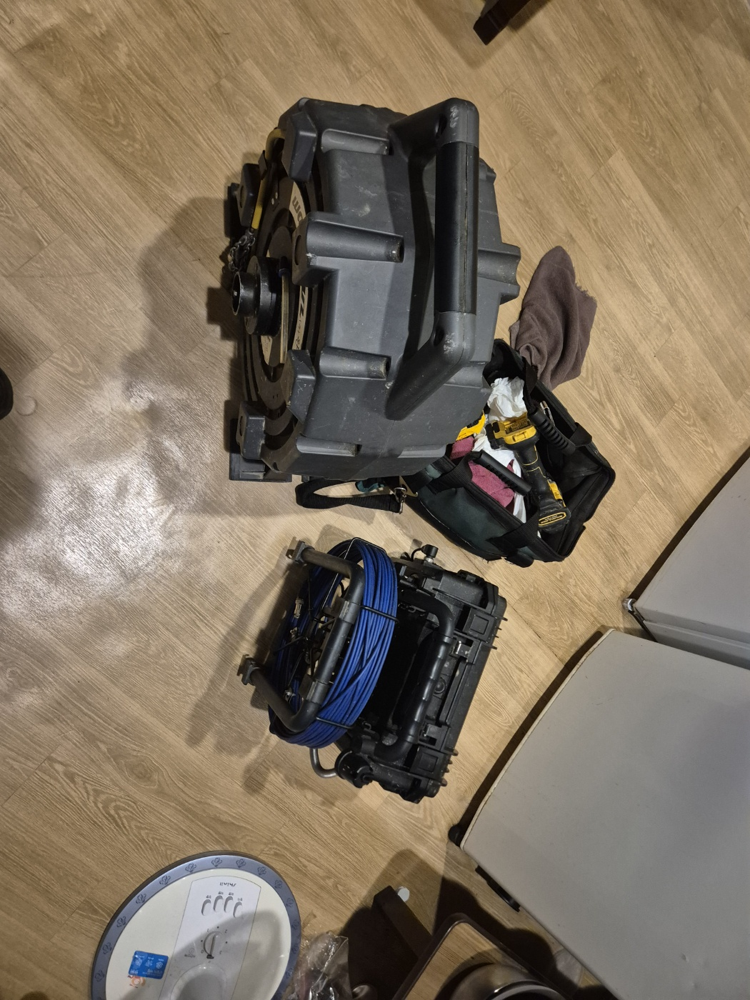

창원성산구 지역의 누수는 벽이나 바닥 안쪽 배관에서 서서히 진행되는 경우가 많아 초기에 알아차리기 어렵습니다. 아래 체크리스트로 미리 확인해 보시고, 의심 증상이 있다면 전화로 접수해 주세요. 현장 진단 후 견적에 동의하신 뒤에만 작업이 진행됩니다.

평택 소사벌 시공사례에 사용한 전동스프링·내시경 카메라 장비 사진입니다
창원성산구 누수, 아래층 민원으로 처음 알게 되는 경우
대단지 아파트는 누수가 발생하면 아래층에서 먼저 연락이 오는 경우가 많습니다. 슬라브 안쪽 배관 문제는 위층에서는 증상을 느끼기 어렵기 때문입니다.
셀프 체크리스트
- 아래층에서 연락이 오면 바로 확인 절차를 밟기
- 수도 요금 변화를 눈여겨보기
- 관리사무소와 신속하게 공유하기
- 계량기로 누수 여부를 직접 확인하기
이럴 땐 전문업체를 불러야 합니다
정확한 위치를 모른 채 공사를 시작하면 범위가 커질 수 있습니다. 누수탐지 장비로 먼저 진단받은 뒤 필요한 부분만 보수하시길 권합니다.
접수 안내
창원성산구 지역 누수 관련 문의는 전화로 접수해 주세요. 접수 건은 확인 후 신속하게 연결해 안내해 드리며, 자세한 내용은 자주 묻는 질문에서도 확인하실 수 있습니다.